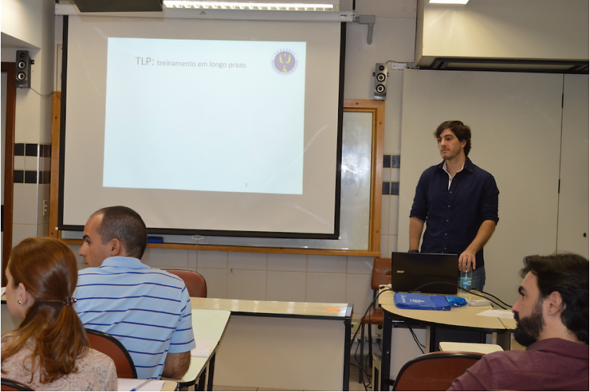

Yan Cintra, psicólogo especialista da Flow Consultoria e Profa. Ma. Marisa Markunas, do Bradesco Esportes e Educação foram os responsáveis pelo minicurso Aspectos psicológicos no desenvolvimento de talentos esportivos oferecido pela ABRAPESP no seu V Congresso.

“Logo de inicio a discussão foi buscar, com a turma, o significado de talento esportivo e suas características” – disse Yan.
E o que seria um talento esportivo? Ainda segundo Yan Cintra, é o que chamaríamos comumente de atleta potencial, que é identificado por fatores como aptidão física, envolvimento e prazer com a prática da modalidade, entre outros.
A partir desta identificação é seria iniciado o trabalho de desenvolvimento dos aspectos psicológicos em três etapas: auto-estima, auto-confiança e, no futuro, auto eficácia. Tudo isto considerando os contextos familiar, técnico e auto-rendimento.
E a conversa seguiu por ai. Assista o vídeo com a professora Marisa Markunas e saiba mais sobre o minicurso: